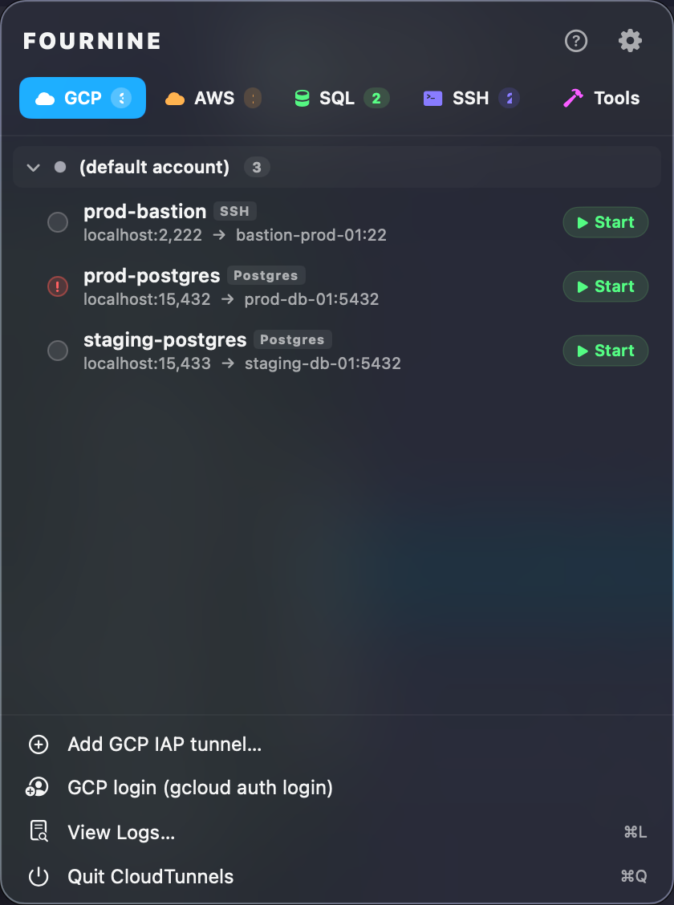
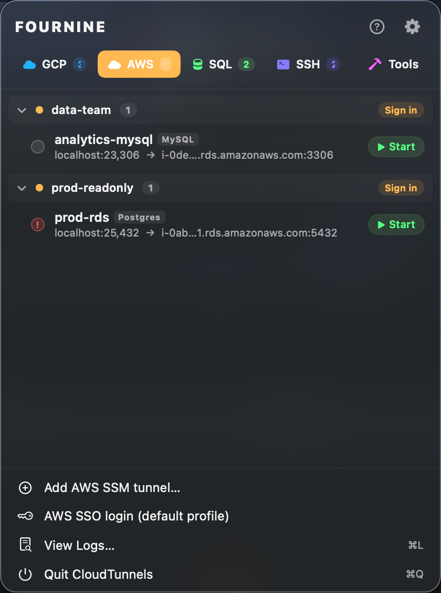
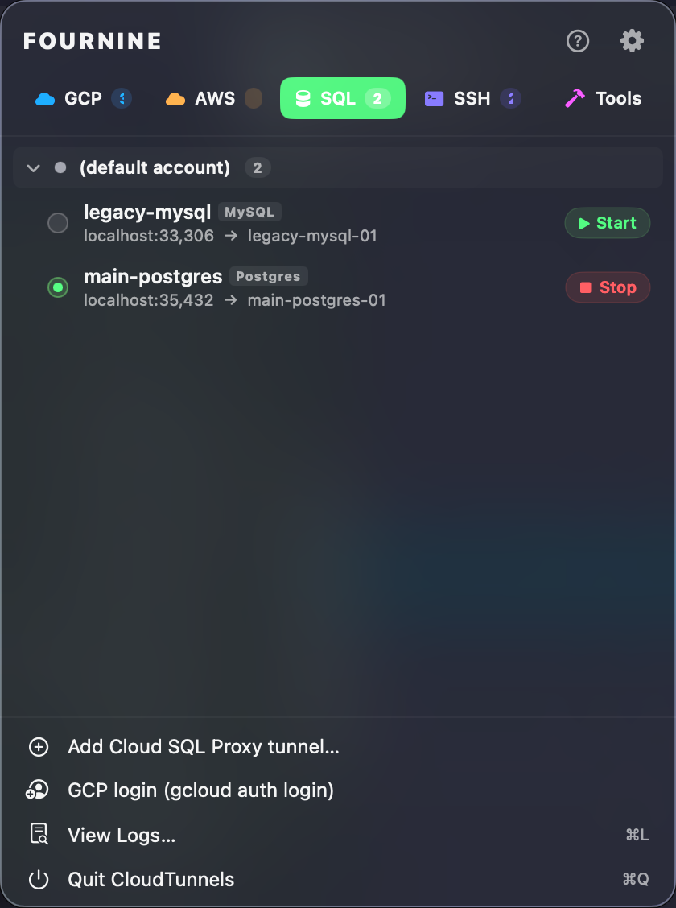
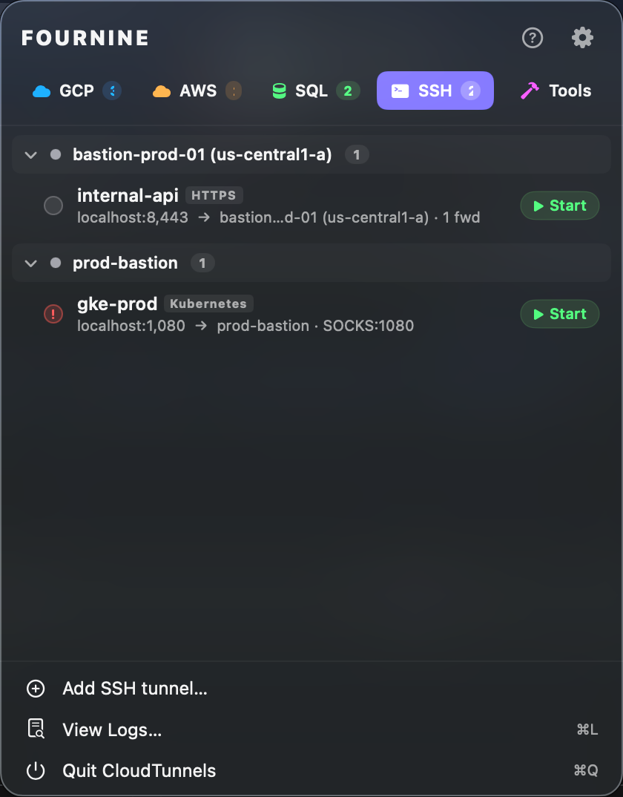
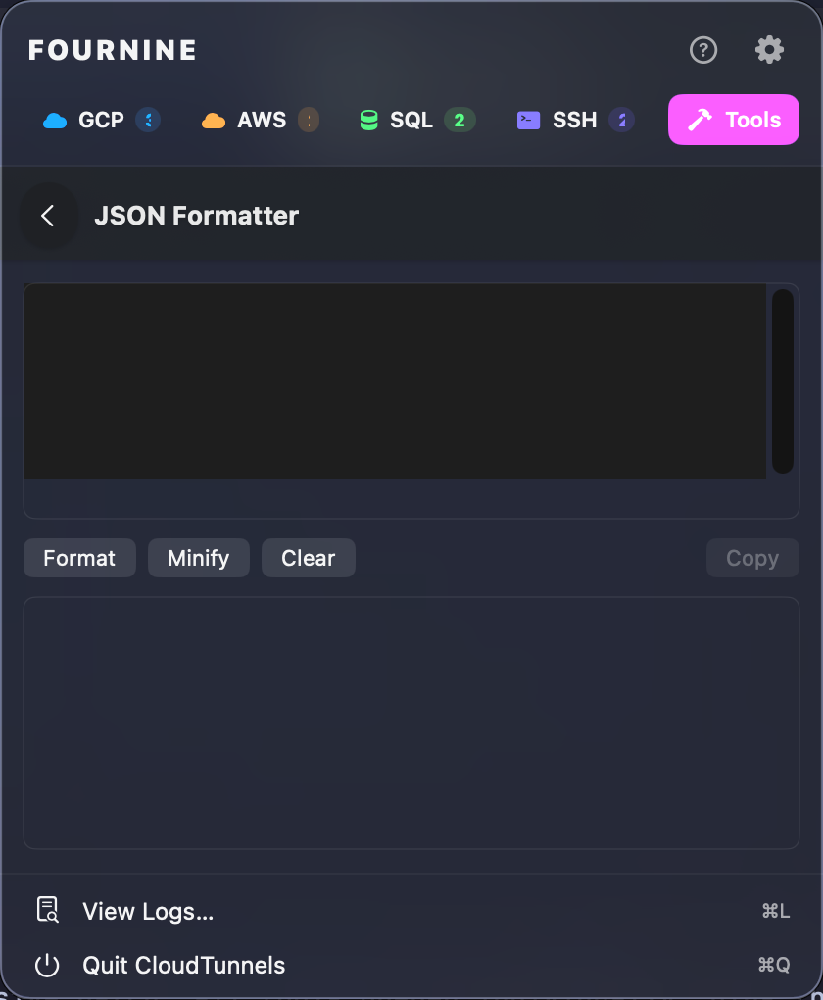

GCP IAP
Wraps gcloud compute start-iap-tunnel. Pin per-tunnel gcloud accounts; run multiple identities side by side without re-auth.
Manage GCP IAP, AWS SSM, Cloud SQL Proxy, and SSH port-forwarding tunnels from a single menu bar app — with auto-reconnect, multi-account auth, kubeconfig auto-patching, and a ctun CLI.

Unified UI, unified status, unified config — across GCP IAP, AWS SSM, Cloud SQL Auth Proxy, and SSH. Each tunnel pins to its own account or profile, so multi-tenant work doesn't mean re-logging in.
Wraps gcloud compute start-iap-tunnel. Pin per-tunnel gcloud accounts; run multiple identities side by side without re-auth.

Wraps aws ssm start-session. Direct port-forward or bastion-to-RDS, with per-tunnel profile and region override.

Drives cloud-sql-proxy v2. Private IP, auto IAM auth, and service-account impersonation as toggles.

SOCKS5 + -L forwards over SSH config alias or IAP-wrapped gcloud compute ssh. Patches kubeconfig automatically.
Built by an SRE for SREs. Every quirk you've hit running gcloud / aws / ssh tunnels by hand is solved here.
Network drops or instance restarts retry up to 3× with backoff. Auth-expiry skips reconnect to avoid loops.
Watches stderr for token-revoked patterns per provider, surfaces a notification, and pauses retries.
Add Tunnel form auto-fills the next free local port — a second Postgres tunnel never collides with the first.
SSH tunnels with a SOCKS port automatically set proxy-url on connect and unset it on disconnect.
One-click open: k9s, psql, browsers, RDP, VNC, MongoDB Compass — driven by tunnel kind.
Next-meeting banner with Join button (Zoom / Meet / Teams / Webex auto-detected) plus pre-meeting reminders.
Port killer, JSON formatter, cert chain inspector, JWT decoder, kubeconfig viewer, cluster health, cron parser. Everything runs locally.

Requires macOS 13+ and Xcode 15 command-line tools. Universal binary out of the box.
# clone, build, install
git clone https://github.com/FournineCS/cloud-tunnels.git
cd cloud-tunnels
make app # build/CloudTunnels.app
make install # /Applications
make install-cli # /usr/local/bin/ctunctun list # all tunnels
ctun start prod-db # foreground
ctun start prod-db --detach
ctun status
ctun stop prod-db # also stops GUI tunnels